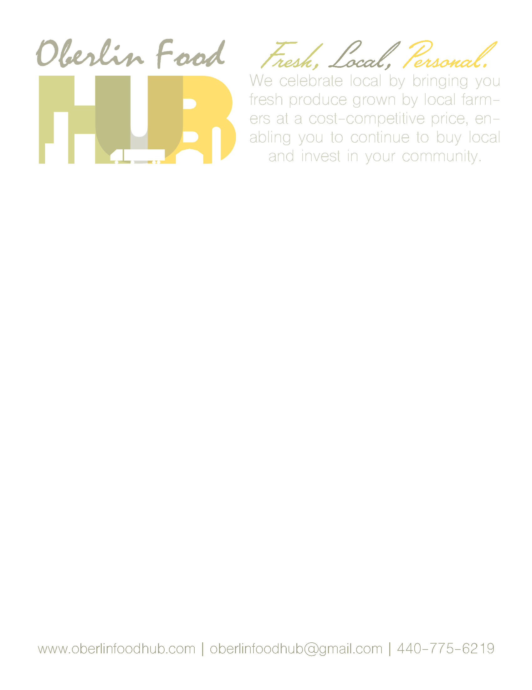

Achievements & Co-Curriculars
Eagle Scout
As of October 19, 2016, I am an Eagle Scout. The highest award in the Boy Scouts of America, I worked my way up through seven ranks and twenty-something merit badges before completing an Eagle Scout Service Project in order to obtain this honor. The Eagle Project involved designing, funding, and completing a project to benefit a local nonprofit; my project involved repainting ceiling tiles in my high school’s MPR. You can see my project notebook (from proposal to conclusion) here.

Foresight Prep @ Oberlin: Future of Communications
I attended a seminar in July 2017 on communications at Oberlin College. This seminar was such and interesting experience for me: it was a chance for me to break out of my STEM-oriented coursework and to look into fields with more of a liberal arts focus. While I did decide on pursuing an Applied Maths degree, attending Foresight Prep opened my eyes to lots of different ways of communicating and gave me innumerable skills that I am confident will be a great aid in my professional life after university. Most of the class was focused on college prep and presentation skills, the latter of which I know will come into play. The final project that we completed as a part of the seminar was to develop, in groups of 3, a communications plan for a local nonprofit; my group’s nonprofit was the Oberlin Food Hub. You can see some of the work that I did below, and look at the website mockup we made at comsfoodhub.weebly.com.
This is one of the materials that I made for the Oberlin Food Hub as a part of the project. It is a template for a flier that they can use, created using Adobe InDesign in conjunction with Photoshop.
